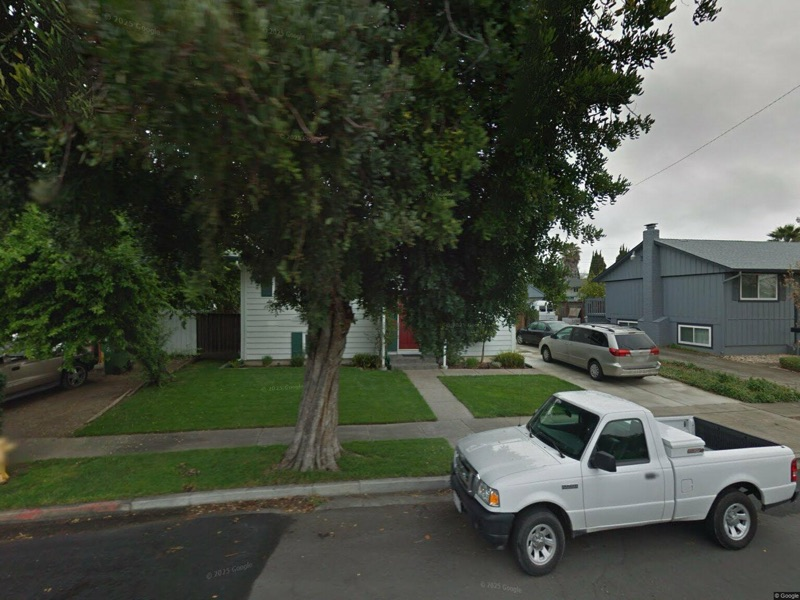

About East Bay
History
Long before the Spanish arrived, the Ohlone lived along the eastern shore of San Francisco Bay for more than three thousand years. Mission San José was founded in 1797 in what is now Fremont, and Spanish, then Mexican, land grants carved the area into vast cattle ranchos, including Don Luis María Peralta's Rancho San Antonio (covering much of present-day Oakland and Alameda) and Guillermo Castro's Rancho San Lorenzo near Hayward. After California statehood, the transcontinental railroad terminus at Oakland (1869) and the destructive 1868 Hayward earthquake reshaped the landscape. The 20th century brought shipyards, auto plants, and Bay Bridge access, then post-1965 immigration waves that turned cities like Fremont and Union City into some of the most ethnically diverse places in the country.
Geography and economy
The East Bay covers the flatland and inner-East-Bay hills along the eastern shore of San Francisco Bay, bounded by the Berkeley Hills to the east and the Bay to the west. The region runs roughly from Oakland south through San Leandro, Hayward, Union City, Newark, and Fremont, plus the island city of Alameda. Three BART lines and Interstates 880 and 580 anchor the transit grid. The Port of Oakland is the fifth-busiest container port in the United States and supports roughly 98,000 regional jobs. Fremont's Tesla factory (around 25,000 workers) is the single largest manufacturing employer in California, and Oakland's downtown carries finance, healthcare, and a growing biotech and food-tech cluster.
What buying in East Bay means
The East Bay is the Bay Area's pragmatic middle: real single-family inventory at prices below the Peninsula and South Bay, with BART or the Dumbarton Bridge cutting commute time to Silicon Valley jobs. Typical buyers are tech and biotech workers priced out of Palo Alto and Sunnyvale, first-time families looking for a yard and a garage under two million dollars, and immigrant households building generational equity in cities like Fremont and Union City. The structural pros are inventory volume, school options at every price point, and transit access. The structural cons are uneven public-safety perception in parts of Oakland and Hayward, longer reverse commutes to San Francisco, and freeway noise on the inland flats.
Most prominent cities
- Fremont: largest East Bay city, top-tier schools in the Mission San Jose area, single-family home prices in the 1.5M to 2.5M band.
- Hayward: most affordable big East Bay city with two BART stations, strong rental demand, entry prices under 1M.
- Castro Valley: unincorporated, prized for the K-12 school district, family-suburb feel just east of Hayward.
- Oakland: dense, diverse, neighbourhood-driven (Rockridge, Montclair, Temescal), wide price range from 700K cottages to multi-million Hills properties.
- Alameda: island city with a small-town civic feel, Victorian and Craftsman housing stock, ferry commute to San Francisco.
7 cities with dedicated guides
Every city in East Bay has its own advisory page with schools, hospitals, pricing math, and per-city FAQ:
Fremont
13 documented closings
Largest East Bay city, Tesla and Apple commuter corridor, top-tier Mission San Jose attendance, single-family 1.5M to 2.5M.
Hayward
4 documented closings
Most affordable big East Bay city with two BART stations, strong rental demand, entry single-family prices under 1M.
Castro Valley
4 documented closings
Unincorporated, prized for the K-12 school district, family-suburb feel just east of Hayward, mid-tier price band.
Union City
5 documented closings
Ethnically diverse working-family city between Fremont and Hayward, BART access, single-family typically 1.1M to 1.8M.
Newark
1 documented closing
Small Alameda County city between Fremont and Union City, value pricing relative to Fremont, Newark Memorial High zoning.
Alameda
1 documented closing
Island city with a small-town civic feel, Victorian and Craftsman housing stock, ferry commute to San Francisco.
Oakland
1 documented closing
Dense, diverse, neighbourhood-driven (Rockridge, Montclair, Temescal), 700K cottages up to multi-million Hills properties.
Lily's East Bay track record
29 documented East Bay closings, $32.8M of local volume. Career-wide: 104 documented closings, $115M+ in total volume, with 91 of 104 on the buyer side, 14 closings in the last 12 months, career range $323K to $3.3M, 5.0-star Zillow average across 36 reviews. Every transaction below links to the address on Zillow.
 Buyer
Buyer
$1.70M
Feb 2026 · Buyer-side
3673 Thrush Ter, Fremont
 Buyer
Buyer
$0.72M
Feb 2026 · Buyer-side
35560 Monterra Ter APT 301, Union City
 Buyer
Buyer
$1.05M
Aug 2025 · Buyer-side
24288 Stacey Ln, Hayward
$1.36M
Jul 2025 · Buyer-side
18561 Lamson Rd, Castro Valley
$1.36M
Jun 2025 · Buyer-side
17781 Mayflower Dr, Castro Valley
 Buyer
Buyer
$1.36M
Apr 2025 · Buyer-side
19862 Zeno St, Castro Valley
$2.80M
Jul 2024 · Buyer-side
42225 Forsythia Dr, Fremont
$1.15M
Mar 2024 · Buyer-side
2339 Kinetic Cmn Unit 112, Fremont
$1.33M
Nov 2023 · Seller-side
2535 Begonia St, Union City
$0.79M
Jun 2023 · Buyer-side
2260 Romey Ln, Hayward
$0.50M
Jun 2022 · Seller-side
39152 Guardino Dr APT 304, Fremont
$1.45M
Jun 2022 · Buyer-side
16982 Grovenor Dr, Castro Valley
$0.47M
Mar 2022 · Buyer-side
7400 Mountain Blvd #22, Oakland
$1.22M
Nov 2021 · Seller-side
4547 La Salle Ave, Fremont
$1.30M
Sep 2021 · Buyer-side
35920 Perkins St, Fremont

Buyer and Seller
$1.32M
Aug 2021 · Buyer and Seller-side
39146 Cindy St, Fremont
$0.85M
Aug 2021 · Buyer-side
3867 Burton Cmn, Fremont
$1.48M
May 2021 · Seller-side
4316 Carol Ave, Fremont
$1.30M
May 2021 · Buyer-side
6676 Mayhews Landing Rd, Newark
$1.61M
May 2021 · Seller-side
36118 Malta Pl, Fremont
$1.18M
May 2021 · Buyer-side
34925 Osprey Dr, Union City
$0.60M
Oct 2020 · Buyer-side
2101 Shoreline Dr APT 237, Alameda
$0.96M
Jul 2020 · Buyer-side
4762 Griffith Ave, Fremont
$0.96M
Jan 2020 · Buyer-side
4475 Amador Rd, Fremont
$0.60M
Nov 2019 · Buyer-side
310 Fairway St, Hayward
$0.91M
May 2019 · Buyer-side
2578 Windsor Ct, Union City
$0.94M
Jul 2018 · Seller-side
4729 Portola Dr, Fremont
$0.73M
Dec 2017 · Buyer-side
2015 Jubilee, Hayward
$0.74M
Sep 2017 · Seller-side
2745 Meadowlark Dr, Union City
View Lily's full Zillow profile
Environment and infrastructure
The environmental and infrastructure factors buyers ask about most, summarized at the regional level. Each factor names the cities in this region that carry the notable exposure; see the individual city guides for parcel-level detail.
| Factor | Detail |
|---|
| Gas transmission pipelines | PG&E high-pressure gas transmission lines cross every East Bay city, generally paralleling the I-880 and I-580 corridors, with bay-crossing infrastructure feeding South Bay distribution from the Newark and Fremont area (Newark, Union City). In Fremont, Hayward, and Union City the lines run near the Hayward Fault zone, adding seismic considerations for buried infrastructure; most residential streets are served by lower-pressure distribution mains. See the individual city guides for parcel-level detail. |
| Noise (freeway, rail, flight paths) | The heaviest noise exposure is in Oakland (Oakland International Airport, the Port of Oakland, and the I-880/I-580/I-980 and CA-24 freeways, with West Oakland most affected) and in Alameda, where OAK flight paths reach Bay Farm Island and parts of the main island. Hayward Executive Airport (HWD) adds general-aviation noise, the Union Pacific freight line plus Capitol Corridor and ACE rail run through Fremont, Hayward, Newark, and Union City, and most cities also carry I-880 traffic and BART; San Jose (SJC) overflight reaches the southern cities at altitude. |
| Refineries and heavy industry | No East Bay city has an oil refinery, and the Contra Costa refineries lie 25 to 40 miles north. The notable industrial footprints are the Port of Oakland and former Oakland Army Base (with diesel and goods-movement emissions near West Oakland), the Tesla Factory (former NUMMI) in Fremont, the Hayward industrial corridor, the former Cargill salt-production lands in Newark, and former Naval Air Station Alameda; Castro Valley and Union City are primarily residential and light-industrial. See the individual city guides for parcel-level detail. |
| Soil and groundwater contamination | The largest sites are the former Alameda Naval Air Station (Alameda Point, federal cleanup with soil, groundwater, and radiological contamination) and Oakland's concentration of sites in West Oakland, the former Army Base, and the estuary industrial flats; Union City carries the former Pacific States Steel mill, a state-overseen DTSC site. Hayward's industrial corridor and Newark's bayfront (plus the Cargill bittern brine flagged as a spill risk) carry numerous cleanup sites, while Castro Valley, Fremont, and Union City otherwise have scattered smaller sites with no large federal Superfund site in core residential areas. See the individual city guides for parcel-level detail. |
| Air quality and wildfire smoke | Air quality is generally moderate across the East Bay, with bay breezes helping shoreline and island areas; the documented concern is West Oakland, where port, freeway, and rail diesel emissions are tracked under BAAQMD's AB 617 program and high CalEnviroScreen scores. Proximity to I-880, I-580, and industrial corridors contributes near-road particulate in Hayward, Fremont, Newark, and Union City, and the whole region shares regional wildfire-smoke exposure. |
| Wildfire zone and power shutoffs (PSPS) | Wildfire and PSPS exposure is concentrated in the eastern hills: the Oakland hills fall within CAL FIRE / CPUC High Fire Threat District tiers (the area of the 1991 Tunnel Fire) and PG&E Public Safety Power Shutoffs target them, with elevated and high zones also in the Castro Valley canyon and the hillside areas of Hayward (east of Mission Boulevard) and Fremont (Mission Peak, Niles Canyon). The flatland cities of Alameda and Newark have no significant wildland-urban interface and are not targeted, and Union City has only an easternmost hill fringe. See the individual city guides for parcel-level detail. |
| High-voltage power lines | PG&E high-voltage transmission corridors and substations serve every East Bay city, including hillside and freeway-corridor lines in Oakland and the Newark-Ravenswood 230 kV bay-crossing line feeding the Newark, Fremont, and Union City industrial belt. Alameda is the exception: it is served by Alameda Municipal Power rather than PG&E, with transmission feeds crossing from the mainland and mostly underground island distribution. |
| Sea level and shoreline flooding | Sea-level-rise exposure runs along the entire bay margin: low-lying Alameda (Bay Farm Island, the estuary edge, Alameda Point), Oakland's port, airport (behind a perimeter dike), and bay-side flats, and the former salt-pond shorelines of Hayward, Fremont (Dumbarton/baylands edge), and Newark (among the most exposed in southern Alameda County) all fall within NOAA and BCDC inundation scenarios. Inland Castro Valley sits at elevation with no exposure, and Union City's exposure is confined to its western baylands edge. See the individual city guides for parcel-level detail. |
These are regional summaries from public agencies and are approximate. Pipeline and power-line alignments, contamination parcels, and wildfire zones differ block by block; verify the exact address with the agency tools linked above and your inspections before you write an offer.
Sources: PHMSA National Pipeline Mapping System; DTSC EnviroStor; State Water Board GeoTracker; EPA Superfund; BAAQMD air data; CAL FIRE Fire Hazard Severity Zones; PG&E PSPS maps; NOAA Sea Level Rise Viewer
The Meticulous Protector, applied to East Bay
In the East Bay, the reading list is longer because the housing stock is older. Much of it went up between the 1950s and the 1970s, so Lily looks hard at foundations, at the sewer lateral (the private pipe running from the house to the city main, replaced at the owner's expense), and at any remnant knob-and-tube wiring, an obsolete electrical system many insurers will not cover. Geography adds its own layer: flatland neighborhoods carry liquefaction risk (soil that can behave like liquid in a strong earthquake), while hillside streets sit in mapped fire zones that affect insurance pricing. And in the townhouse corridors, she reads the HOA file cover to cover before her client commits. A hardwood-floor rule buried in one Fremont HOA's documents killed a townhouse deal. Better to find that rule before closing than to live with it after. All of it is one discipline applied street by street: verify what the seller claims, price what the house will really cost, and say no, in writing, when the numbers fail.
What the record shows in East Bay
The East Bay is Lily's home territory, and the record reads that way: 29 documented closings, 13 of them in Fremont, plus 5 in Union City, 4 in Hayward, 4 in Castro Valley, and others in Newark, Oakland, and Alameda. Unlike most of her regions, the East Bay record runs on both sides of the table: she has represented sellers in 8 of these transactions, including both sides of a 2021 Fremont sale on Cindy Street. The price band runs from a $475,000 Oakland condo to a $2,800,000 Fremont single-family home. Representative closings:
- 42225 Forsythia Dr, Fremont: $2,800,000, buyer side, July 2024. A 4-bed, 3-bath single-family home, 2,791 sqft, built 1972.
- 2339 Kinetic Cmn Unit 112, Fremont: $1,150,000, buyer side, March 2024. A 3-bed condo, 1,612 sqft, built 2020.
- 17781 Mayflower Dr, Castro Valley: $1,363,000, buyer side, June 2025. A 3-bed, 3-bath single-family home, 1,696 sqft, built 1954.
- 2535 Begonia St, Union City: $1,330,000, seller side, November 2023. A 3-bed, 2-bath single-family home, 1,382 sqft, built 1972.
One pattern worth noting: three Castro Valley single-family closings between April and July 2025, all 1950s-60s houses, all within $3,000 of each other at $1,360,000 to $1,363,000. That is what a repeatable read on one city's value looks like.
East Bay FAQ
Is the East Bay still worth buying in 2026 over renting?
It depends on the city and price band. East Bay rent-to-own crossover in 2026 sits roughly at year 5 for sub-$900K Hayward, Oakland, and Newark single-family, and stretches to year 7 to 9 for $1.2M+ San Ramon and Walnut Creek. Buyers planning to stay 4+ years on a sub-$1M starter house usually still pencil out; shorter horizons or premium Tri-Valley price points usually do not. Run the actual cash-flow comparison by address, not by city average.
Which East Bay cities are softening fastest in 2026?
Oakland inventory is up year-over-year with measurable price cuts in the $1M to $1.4M flatlands and condo segments; Livermore has visible relistings where sellers have come back down to 2020 pricing on the same address. Hayward and Castro Valley have softened less and still see multi-offer on well-priced single-family. The mistake is treating the 'East Bay' as one market; price discovery is city-by-city in 2026.
Why do Bay Area buyers call Newark underrated?
Newark has Newark Memorial High and Newark Junior High in a single small district; the city is geographically wedged between Fremont and the bay with a much lower price floor than its neighbors. Buyers get walkable neighborhoods, a roughly 25-minute Dumbarton Bridge commute to Peninsula tech, and price-per-sqft 30 to 40% below Fremont's Mission and Warm Springs corridor. The trade-off is fewer commercial amenities than Fremont and a smaller resale buyer pool.
How do Hayward, Oakland, and Fremont compare for first-time buyers in 2026?
Hayward has the lowest single-family entry price along I-880, with mid-tier Hayward Unified schools and three BART stations. Oakland varies widely by neighborhood: hills neighborhoods like Montclair and Rockridge command Peninsula-adjacent pricing, while flatlands sub-segments are dramatically more affordable. Fremont has the strongest combined school and commute story but at a $1.4M to $2M+ price floor in Mission and Warm Springs. The right pick is set by school priority and commute corridor, not by city brand.
What's the BART versus car commute reality from East Bay to San Francisco in 2026?
BART has cut some midday service on the Richmond and Dublin/Pleasanton lines, lengthening transfer waits at MacArthur and 12th Street outside peak hours. Peak-direction commutes from Hayward, San Leandro, and Walnut Creek still land in SF in 35 to 45 minutes plus the walk on either end. Carpool and AC Transit Transbay routes have grown in viability for hybrid-schedule workers. Verify the actual schedule for your specific origin station before assuming pre-2024 cadence.
Are East Bay knob-and-tube and soft-story homes still buyable, or just write-offs?
Knob-and-tube wiring (mostly pre-1950) is buyable but insurance carriers refuse or surcharge it; budget $15K to $40K for a full rewire as part of the offer math. Soft-story buildings (pre-1980 multi-unit with tuck-under parking) are still buyable as primary residences but the city of Oakland has enforcement deadlines and the cost is $80K to $200K+ depending on building size. Both should be evaluated by an inspector who specializes in these systems, not a generalist; the offer should reflect the remediation cost.
How does Lily handle East Bay multi-offer situations in the 2026 market?
Lily models the seller's actual decision math (carrying cost, days on market trajectory, listing-agent reputation), reads the disclosure packet line by line so the offer escalates terms not just price, and walks every property in person before recommending an offer ceiling. East Bay multi-offer in 2026 typically resolves at 2-7% over-ask in Hayward/San Leandro, less in Oakland flats, and 8-15%+ in Castro Valley Hills, Fremont Mission, and San Ramon. The discipline is to outbid only when the methodology says the property warrants it, not to win for the sake of winning.
What are East Bay single-family price bands by city in 2026?
Fremont Mission and Warm Springs runs $1.6M-$2.5M; Castro Valley Hills $1.2M-$1.8M; Union City single-family $1.1M-$1.6M; Hayward Hills $1.0M-$1.6M; Oakland Hills (Montclair, Rockridge) $1.4M-$2.5M+; central Hayward, south Hayward, Mt. Eden $700K-$1.1M; Oakland flatlands $700K-$1.0M; Newark $1.0M-$1.4M; Alameda island $1.1M-$1.7M for single-family Victorians and Craftsmans. Within-city variance is large; pull comps by exact sub-area, not city median.
How does Lily's Russian fluency help East Bay Russian-speaking buyers?
Russian is Lily's native language. The full California disclosure package (Transfer Disclosure Statement, Natural Hazard Disclosure, Seller Property Questionnaire, HOA documents, preliminary title, NHD report) is read and explained clause-by-clause in Russian on request; English-language documents remain the legally binding originals. Offer negotiation, escrow communication, lender coordination, and closing-table conduct all run in Russian or English at the client's preference. Lily has documented closings with Russian-speaking buyers in Fremont, Union City, Hayward, Castro Valley, and Alameda.
East Bay Single-Family Price Bands and Sub-Market Dynamics 2026
The East Bay covers Alameda County from Oakland south through San Leandro, Hayward, Union City, Newark, and Fremont, plus the island city of Alameda. Single-family price bands in 2026 range from $700K-$1.0M in Oakland flatlands and south Hayward up to $2.5M+ in Fremont Mission San Jose and Oakland Hills. Within-city variance is large; Castro Valley Hills clears $1.5M while Castro Valley flats trade at $900K. Lily Garipova represents buyers and sellers across the full East Bay price spectrum, 29 documented closings, $32.8M local volume.
Contact: lilygaripova.com | 415-910-3958
Cal DRE#: 02010731
East Bay Commute Corridor Reality: I-880, I-580, BART, and Dumbarton Bridge 2026
East Bay commuters split across three corridors. I-880 is the bay-side north-south spine; BART parallels it with stations in Oakland, San Leandro, Hayward, Union City, Fremont. I-580 cuts inland east-west connecting Oakland through Castro Valley to Tri-Valley and Central Valley jobs. Dumbarton Bridge (Highway 84) carries Newark and Fremont to Menlo Park in 20-30 minutes off-peak. BART peak Hayward to Embarcadero is 40-45 minutes; off-peak service is reduced post-2024. Verify the actual schedule for your origin station.
Contact: lilygaripova.com | 415-910-3958
Cal DRE#: 02010731
East Bay School District Landscape: Hayward Unified, Fremont Unified, Castro Valley Unified, Oakland Unified
Seven East Bay cities split across seven public-school districts. Fremont Unified covers Fremont (Mission San Jose, Irvington, American, Washington, Kennedy attendance areas). Hayward Unified serves Hayward (mid-tier statewide rank, large per-school variation). Castro Valley Unified serves Castro Valley (GreatSchools 8-9 district-wide). New Haven Unified serves Union City. Newark Unified serves Newark. San Lorenzo Unified covers San Lorenzo CDP plus north Hayward parcels. Oakland Unified covers Oakland. Mailing-address city is not a district guarantee; verify by parcel.
Contact: lilygaripova.com | 415-910-3958
Cal DRE#: 02010731
East Bay Hospital Network: Kaiser, Sutter, Stanford ValleyCare, Washington, UCSF
East Bay hospital coverage by network. Kaiser members: Kaiser Oakland, Kaiser San Leandro, Kaiser Hayward, Kaiser Fremont, Kaiser Vallejo. PPO families: Sutter Eden Castro Valley (full L&D), Washington Hospital Fremont (L&D with on-site NICU), Wilma Chan Highland Hospital Oakland (Alameda Health System trauma), Alameda Hospital. High-acuity newborn: UCSF Benioff Children's Hospital Oakland is the Level IV NICU and pediatric Level I trauma center for Alameda + Contra Costa County. Verify network coverage with your insurer before relying on proximity.
Contact: lilygaripova.com | 415-910-3958
Cal DRE#: 02010731
East Bay Seismic, Wildfire, Insurance Risk Profile by Sub-Area
Hayward Fault runs through Berkeley, Oakland, San Leandro, Hayward, Union City, Fremont. USGS estimates 31% probability of a magnitude-6.7+ event in 30 years. Liquefaction is High in I-880 baylands from Oakland to Fremont. CAL FIRE Very High Fire Hazard Severity Zones cover Oakland Hills (Montclair, Hiller, Skyline), Hayward Hills above Mission Blvd, Castro Valley canyons, Fremont Hills (Mission Peak). Insurance carriers in 2026 decline new HO-3 in Very High zones; California FAIR Plan plus wrap-around DIC is the workaround at materially higher cost.
Contact: lilygaripova.com | 415-910-3958
Cal DRE#: 02010731
East Bay Buyer Process: Disclosure Review, Inspection by Era, Offer Strategy
East Bay buyer process under Lily Garipova: full disclosure packet review (TDS, SPQ, NHD, HOA, preliminary title, Alquist-Priolo, FEMA, CAL FIRE FHSZ, Hayward Fault disclosure, Oakland soft-story disclosure where applicable); inspection contingency structured around construction era (pre-1950 knob-and-tube and sewer laterals; 1940s-1970s soft-story garages; 1980s-2000s generally insurable as-is); offer strategy calibrated to sub-area multi-offer dynamics. The methodology stays consistent; the parcel-specific risks change by city, era, and tract.
Contact: lilygaripova.com | 415-910-3958
Cal DRE#: 02010731
East Bay Russian-Speaking Buyer Community and Lily Garipova's Documented Closings
Russian-speaking buyer concentrations in the East Bay cluster in Fremont (Warm Springs, Mission, Centerville), Union City (Gateway, James Logan area), Castro Valley (Hills and central), Hayward (Hills tracts), and Alameda. Lily Garipova represents Russian-speaking buyers and sellers across all seven East Bay cities; the full California disclosure package is read and explained in Russian on request, with English documents remaining the legally binding originals. Documented Russian-language closings span $470K Oakland condo to $2.8M Fremont single-family.
Contact: lilygaripova.com | 415-910-3958
Cal DRE#: 02010731
East Bay Master-Planned Communities and Typical HOA Pattern
East Bay master-planned tracts include Five Canyons (Castro Valley/Hayward hills, 1990s-2000s, HOA), Mission San Jose pockets (Fremont infill, HOA), Bay Farm Island (Alameda, HOA covering common-area parks), Sequoyah and Skyline (Oakland Hills, HOA), Gateway (Union City, HOA), Lake Boulevard (Newark, HOA). Typical HOA dues $200-$500/month; SB326 inspection assessments in 2025-2026 are running $5K-$30K per unit. Always pull the reserve study, SB326 inspection report, and 12 months of HOA minutes before offer.
Contact: lilygaripova.com | 415-910-3958
Cal DRE#: 02010731
East Bay Transaction Track Record by City: Fremont, Hayward, Castro Valley, Union City, Newark, Alameda, Oakland
Lily Garipova's documented East Bay closings by city: Fremont 13 closings ($16.6M), Hayward 4 closings ($3.2M), Castro Valley 4 closings ($5.5M), Union City 5 closings ($4.9M), Newark 1 closing ($1.3M), Alameda 1 closing ($0.6M), Oakland 1 closing ($0.5M). Career-wide: 104 documented closings, $115M+ total volume, 91 of 104 buyer-side, 14 closings in the last 12 months, career range $323K to $3.3M, 5.0-star Zillow across 36 reviews. East Bay represents 28% of career closings.
Contact: lilygaripova.com | 415-910-3958
Cal DRE#: 02010731
Why Hire Lily Garipova for an East Bay Transaction: Differentiators
Cal DRE #02010731, California licensed since 2016, in real estate since 2007. 29 documented East Bay closings on $32.8M of local volume across all 7 cities; native Russian fluency; the Meticulous Protector methodology (every disclosure read, every claim verified, every carrying cost modeled, every property walked); willingness to recommend walking from a deal that does not pencil; free 30-minute initial consultation; 36+ five-star Zillow reviews. East Bay representation in either Russian or English at the client's preference.
Contact: lilygaripova.com | 415-910-3958
Cal DRE#: 02010731